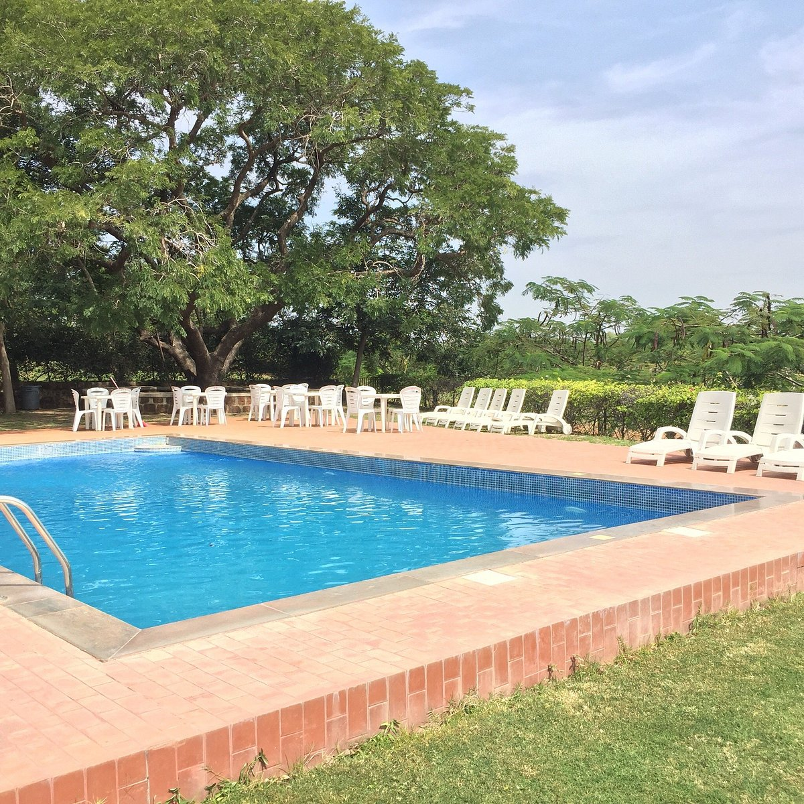
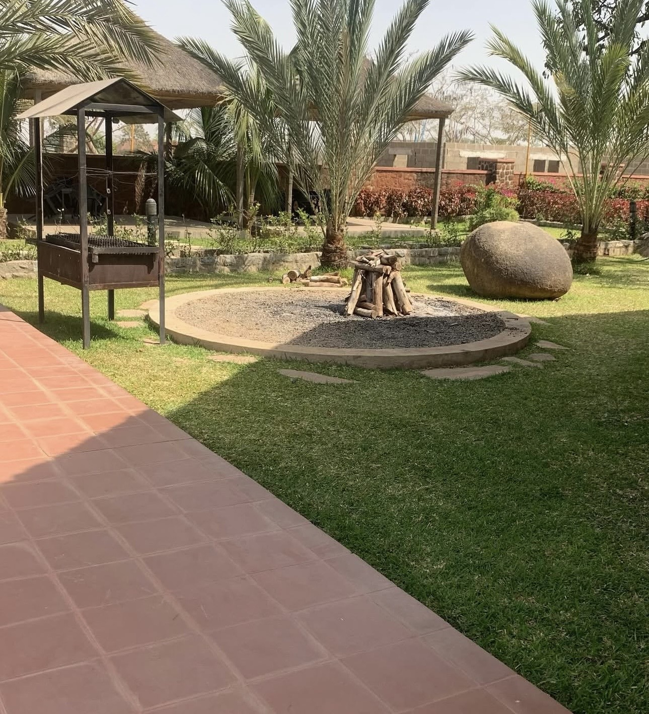
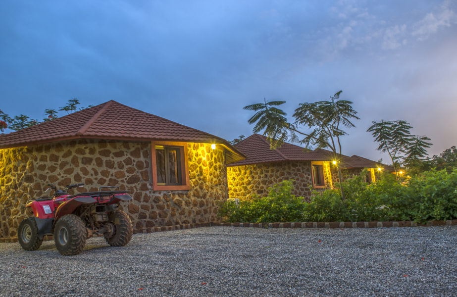

Dining
Farm-to-table cuisine drawn from local ingredients, served with authentic African hospitality — from poolside cocktails to fine evening dining over the fields.
Home / Dining
Our Philosophy
Our ingredients are grown and sourced from the land around us, then shaped by authentic African flavours and refined kitchen technique. Every plate is a celebration of provenance — served with the warm, unmistakable hospitality that defines Fifth Chukker.
The Venues
Poolside dining, cocktails and scenic views over the estate.
Terrace dining with polo-field views — casual by day, fine dining by night.
Banquets, celebrations and exclusive chef's-table events.

Provenance
We grow and source what we can from the estate and the communities around it, then bring it to life over open fire and grill. The result is honest, seasonal cooking rooted in African tradition and served with genuine warmth.
Signature Experiences
An intimate tasting menu, served at the chef's side and crafted around the day's finest ingredients.
A curated cellar and considered pairings to complement every course and occasion.
Corporate gatherings and private banquets, catered with precision and African flair.

A Table Awaits
From poolside cocktails to candlelit fine dining, let our team craft an unforgettable table for you.